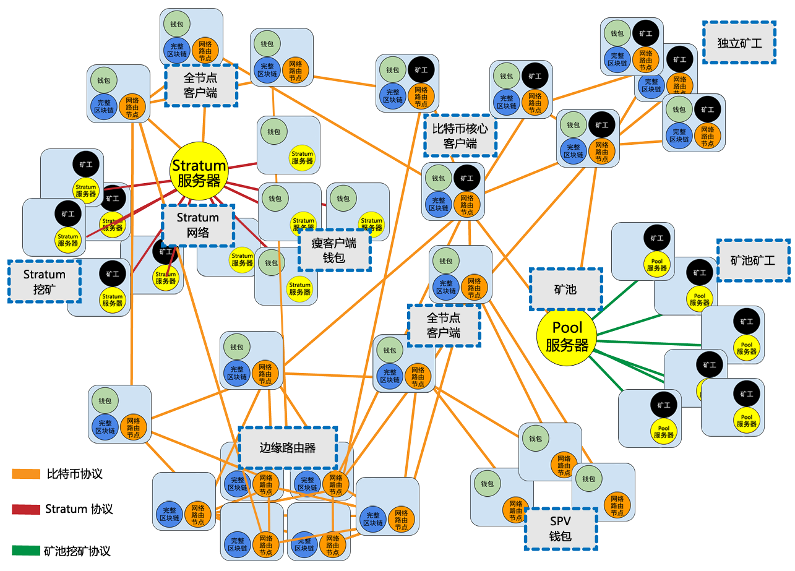

一篇对数字签名的理解
比特币是基于密码学的，密码学这门科学不仅包含被称之为“秘密写作的”加密学，也可以用来证明秘密的知识，而不会泄漏秘密（数字签名），或证明数据的真实性（数字指纹），接下来介绍一下比特币中来控制资金的所有权的密码学，包括了密钥，地址和钱包。
数字签名
简介
比特币的所有权是通过数字密钥，比特币地址和数字签名来确定的，数字密钥实际上不是存储在网络中的，而是由用户独立生成的，存储在钱包文件中或是数据库中；密钥实现了比特币的许多趣味性，包括去中心化信任和控制，所有权认证和基于密码学证明的安全模型
大多数比特币交易都需要一个有效的签名才会被存储在区块链中，只有有效的密钥才能产生有效的数字签名，因此拥有-密钥就拥有了对该账户的比特币的控制权，那么交易中的见证数据证明了所用资金的真正归谁所有
密钥是成对出现的，有一个私钥和公钥所组成
首先我们先介绍密码学并解释比特币中使用的数学知识，然后了解密钥如何被产生的，存储和管理的，代表私钥和公钥，地址和脚本地址的各种编码格式，最后，说一下密钥和地址的高级用途：比特币靓号，多重签名以及脚本地址和纸钱包
公钥加密和加密货币
公钥加密发明于20世纪70年代，它是计算机和信息安全的数学基础。
例如，素数幂和椭圆曲线乘法，这些函数都是不可逆的，很容易向一个方向计算，但是不可以向反方向倒推。比特币正使用椭圆曲线乘法作为公钥加密的基础
支付比特币时，比特币的当前所有者需要交易中提交其公钥和签名（每次交易的签名都不同，但均是同一个私钥生成的），所有比特币网络中的所有人都可通过提交的公钥和签名进行验证，并确认该交易是否有效，即支付者拥有该交易的比特币的所有权
大多数比特币钱包工具为了方便将私钥和公钥以密钥对的形式存储在一起，然而公钥可以由私钥计算的到，所以只存储私钥即可
私钥和公钥
一个比特币钱包中包含一系列的密钥对，每个密钥对包括一个私钥和一个公钥，私钥(k)是一个数字，通常是随机选的，有了私钥通过椭圆曲线乘法这个单向加密的函数产生一个公钥，然后使用一个单向加密哈希函数生成比特币地址
为什么要使用非对称加密（公钥/私钥）？
非对称密码学适用性使得任何人都可以验证每笔交易的每个签名，同时确保只有私钥的所有者可以产生有效的签名
私钥
私钥就是一个随机选出的数字而已。私钥必须始终保持机密，因为一旦泄漏给第三方，那么就相当于将该私钥下的控制的比特币所有权拱手于人；私钥还必须要备份，一旦丢失同理也是弃掉了将该私钥下的控制的比特币所有权
私钥生成，随机256位的二进制数字（64位的16进制）
2256 是一个非常大数字，用十进制表示的话大约1077 ，而可见宇宙被估计只含有1080 个原子
公钥
通过椭圆曲线乘法可以从私钥计算得到公钥，这个过程不可逆转：K = k*G (k是私钥，G被称为生成点点常数点，而K是所得的公钥)
通过私钥，可以计算得到公钥，但是由于过程不可逆，无法通过公钥得到私钥
椭圆曲线密码学(Elliptic Curve Cryptography)
椭圆曲线加密法是一种基于离散对数问题的非对称加密法，可以用对椭圆曲线上的点进行加法或乘法运算来表达。
y2 = x3 + ax + b
备注：动态效果图参看椭圆曲线加密学习

比特币地址
以公钥K为输入，计算其SHA256哈希值，并以此结果计算RIPEMD160哈希值，得到一个长度160位（20字节）的数字：
A = RIPEMD160(SHA256(K))
address = Base58 Encode(A)
Base58和Base58Check编码
为了更简洁方便表示长串的数字，使用更少的符号，许多计算机会使用一种以数字和字母组成的大于十进制的表示法；
Base64使用了26个大小写字母，10个数字及两个符号（+ /）
Base58是一种基于文本的二进制编码格式，这种编码格式不仅实现了数据压缩，保持了易读性，Base58不包含数字0，字母o，大小写i，以及+ / ，比Base64少了6个字符
密钥格式
用Python实现密钥和比特币地址
高级密钥和地址
https://blog.csdn.net/taifei/article/details/74382718
https://blog.csdn.net/taifei/article/details/73880736
https://blog.csdn.net/ztemt_sw2/article/details/81101717
https://github.com/cyhhao/eth-canvas
https://blog.csdn.net/j3t9z7h/article/details/80970818
一篇对比特币网络的理解
- 1.P2P网络架构
- 2.节点类型及角色
- 3.扩展比特币网络
- 4.比特币传播网络
- 5.网络发现
- 6.全节点
- 7.交换“库存清单”
- 8.P2P的连接到数据同步
- 9.简易支付验证(SPV)节点
- 10.Bloom过滤器
- 11.SPV节点如何使用Bloom过滤器
- 12.SPV节点和隐私
- 13.加密和认证连接
- 14.交易池
1.P2P网络架构
P2P是指同一网络中的美态计算机都彼此对等，各个节点共同提供网络服务，每个网络节点以"扁平(flat)"的拓扑结构互相连通
P2P网络节点之间交互运作，协同处理，每个节点在对外提供服务的同时也是使用网络中其它节点提供的服务
对于比特币设计的一种点对点数字现金系统，它的网络架构即反应出其特性，通过维持一种扁平化网路共识，来实现去中心化的交易系统
“比特币网络”是按照比特币P2P协议运行的一系列节点的集合，除了比特币协议之外，比特币网络中也包含其它的协议
例如Stratum协议，就被应用于挖矿，以及轻量级或移动端的比特币钱包中。网关（gateway）路由服务器提供的这些服务协议
例如：Stratum服务器通过Stratum协议将所有的Stratum挖矿节点连接至比特币主网络，并将Stratum协议桥连接(bridge)至比特币p2p协议之上
我们所说的比特币网络是指“比特币P2P协议”，“矿池挖矿协议”，“Stratum协议”以及其它连接比特币系统组件相关协议的整体网络机构
2.节点类型及角色
一个比特币全节点是有“路由”，“区块链数据库”，“挖矿”，“钱包”组成；
- 标准客户端
- 全部数据块节点
- 仅挖矿
- 轻量级钱包SPV
- 协议池服务
- 挖矿节点
- 轻量的底层钱包
| 节点角色 | 描述 | |
| Wallet | Miner | 【标准客户端】 包含一个钱包，挖矿，全部的区块数据，p2p的网络路由节点 |
| Block | NetWork | |
| 节点角色 | 描述 | |
| -- | -- | 【全部数据块节点】 包含全部的区块数据，p2p的网络路由节点 |
| Block | NetWork | |
| 节点角色 | 描述 | |
| -- | Miner | 【仅挖矿】 包含一挖矿，全部的区块数据，p2p的网络路由节点 |
| Block | NetWork | |
| 节点角色 | 描述 | |
| Wallet | -- | 【轻量级钱包SPV】 包含钱包，p2p的网络路由节点 |
| -- | NetWork | |
| 节点角色 | 描述 | |
| Pool Server | Stratum Server | 【协议池服务】 网关路由器将比特币P2P网络连接到运行其他协议的节点，例如矿池挖掘节点或层节点 |
| 节点角色 | 描述 | |
| Miner | Miner | 【挖矿节点】 包含一个挖矿的功能，没有区块链，包含一个底层协议节点或其它挖矿池的协议节点 |
| Stratum node | Pool node | |
| 节点角色 | 描述 | |
| Wallet | -- | 【轻量的底层钱包】 包含一个钱包和一个底层协议的网络节点 |
| -- | StratumNode | |
3.扩展比特币网络
这张复杂的网路架构图我还没有仔细的分析？

4.比特币传播网络
比特币传播网络涉及到了底层网络架构的传输优化（建议了解即可）
比特币网络传播是一种尝试最新小化矿工之间的传输块的延迟网络
为了延迟矿工之间快速同步块，该网络由世界各地的亚马逊web服务基础架构上托管的几个专门的节点，并且连接大多数矿工和采矿池
2016年比特币传播网络被替换成“Fast Internet Bitcoin Replay Engine”(FIBRE)
FIBRE是一种基于UDP的中继网络，可以中继节点网络内的块，FIBRE也是实现了compact(紧凑) block，进一步减少了传输的数据量和网络延迟
还有一个提案阶段中继网络是Falcon，使用“直通路由”而不是“存储转发”来减少延迟，通过传播块的部分，而不是等待知道接受到完成的块
补充一下什么是中继
中继（Relay）是连个交换中心之间的一条传输通路，中继线是承载多条逻辑链路的一条物理连接
在中继的无线系统中，每个用户只是在呼叫时才分配一个信道，一旦通过终止，原先占用的信道就立即回到可用信道库中
物理层中继系统：转发器。
数据链路层中继系统：网桥
网络层中继系统：路由器
在网络层以上的中继系统称为网关，网关就是连接两备个网络的设备
无线路由器中继与桥接模式的区别？
中继模式，就是利用无线路由器之间的无线连接功能，将无线信号从一个中继点传递到下一个中继点，实现信号的增强，并形成新的无线覆盖区域，最终达到延伸无线网络的覆盖范围的目的。事实上，只要有两台支持中继功能的无线路由器，即可拓展网络覆盖范围。
中继和桥接功能对于无线用户的实际使用基本上是一样的，只是设备有所不同，并非所有无线路由器都可以桥接，无线路由桥接就是把无线路由器当中继器使用。桥接并非无线路由器的主要功能。使用中继模式时，网络SSID号均一致，而在桥接模式时，网络SSID号不同。
5.网络发现
p2p握手协议
当新的网络节点启动后，为了能够参与协同运作，必须发现网络中的其他比特币节点；
由于比特币网络的拓扑结构并不基于节点间的地理位置，因此各个节点之间的地理位置信息完全无关，会随机的选择网络中存在的比特币节点与之相连
节点通常采用了TCP协议，通常使用8333端口与已知的对等节点建立连接，在建立连接的时，该节点会通过发送一条包含基本认证内容的version消息开始“握手”通讯
version:{
nVsersion:定义客户端所采用的比特币p2p协议的版本
nLocalServices:[
一组该节点支持的本地服务列表，当前仅支持NOED_NETWORK
]
nTime:当前时间
addrYou:当前节点可见的远程节点的IP地址
addrMe:本地节点所发现的本机IP地址
subver:指示当前节点运行的软件类型子版本号（例如："/Satoshi:0.9.2.1/"）
baseHeight:当前节点区块链的区块高度
}
版本信息始终是任何对等发送给另一个对等的第一条消息，接收版本消息的本地对等将检查远程对等体报告的nVersion，并确定远端对是否兼容，如果兼容则本地等将确认版本消息，并发送一个（ver）ack建立连接
sequenceDiagram
participant a as NodeA
participant b as NodeB
opt 节点A请求连接节点B
a-->>b: 节点A的version
b-->>b: 验证节点A的version
b->>a: 发送verack
end
opt 节点B请求连接节点A
b-->>a: 节点B的version
a-->>a: 验证节点A的version
a->>b: 发送verack
end
新节点如何找到对等体
- 使用多个“DNS种子”来查询DNS，这些DNS服务器提供比特币节点的IP地址列表，其中一些DNS种子提供了稳定的比特币侦听节点的静态IP地址列表，还有一些DNS种子是BIND，它从搜索器或长时间运行的比特币节点收集的比特币节点地址列表中返回一个随机子集，在BitcoinCore客户端中，使用DNS种子的选项switch-dnsseed控制（默认设置为1，以使用DNS种子）
- 不知道网络的引导节点必须被给予至少一个比特币节点的IP地址，之后可以通过进一步来建立连接，命令参数-sendnode可用于连接到一个节点，仅用于将其作为种子
建立连接后地址的传播和发现
当建立一个或者多个连接后，新节点将一条包含自身的ip地址列表的addr消息发送给其它相邻的节点，相邻的节点再将此条addr消息依次转发给其它各自相邻的节点，从而保证新节点信息被多个节点接收，保证连接更稳定；
同时，新接入的节点可以向相邻节点发送getaddr消息，要求他们返回已知的对等节点的ip地址列表
由于节点可以随时的加入和离开，通讯路径是不可靠的，因此节点必须持续进行两项工作：在失去已有连接时发现新的节点，并在其他节点启动时为其提供帮助
一个节点无需连接大量的对等节点，在启动完成后，节点会记住它最新连接成功的对等节点，因此，当重新启动后它迅速与先前的对等节点网络重新建立连接，如果先前的网络无应答，则该节点可以使用种子节点进行重启动
bitcoin-cli getpeerInfo
{
"services" : "00000001",
"lastsend" : 1405634126,
"lastrecv" : 1405634127,
"bytessent" : 23487651,
"bytesrecv" : 138679099,
"conntime" : 1405021768,
"pingtime" : 0.00000000,
"version" : 70002,
"subver" : "/Satoshi:0.9.2.1/",
"inbound" : false,
"startingheight" : 310131,
"banscore" : 0,
"syncnode" : true
},
{
"addr" : "58.23.244.20:8333",
"services" : "00000001",
"lastsend" : 1405634127,
"lastrecv" : 1405634124,
"bytessent" : 4460918,
"bytesrecv" : 8903575,
"conntime" : 1405559628,
"pingtime" : 0.00000000,
"version" : 70001,
"subver" : "/Satoshi:0.8.6/",
"inbound" : false,
"startingheight" : 311074,
"banscore" : 0,
"syncnode" : false
}
异常连接
如果已建立的连接没有数据通信，所在的节点会定期发送信息以维持连接，如果节点持续某个连接长达90分钟没有任何的通信，它会被认为从网络中断开，因此，比特币网络会随时根据变化的节点及网络问题进行动态的调整，无需经过中心化的控制即可进行规模增减的有机调整
6.全节点
全节点是指维持包含全部交易信息的完整区块链的节点，又称“完整区块链节点”，在比特币早起，所有的节点都是全节点；
完整区块链节点，从创始块到网络最新的区块，它可以独立自主的校验任何交易的信息
无需借助任何其他系统，就可以完全摆脱中心化管理，获得完全的独立自由
它的代价就是，需要大量的存储空间和内存空间
7.交换“库存清单”
一个全节点连接到对等节点之后，第一件事要做就是构建完整的区块链，如果该节点不包含如何区块链信息，那么新节点需要从创始块开始的数十万块的全部内容下载到新的节点上；
同步区块的过程中从发送的version消息开始，上面包含区块链的高度（区块的数量），对等节点门会叫唤一个getBlocks消息，其中包含他们本地区块链顶端的哈希值，比较其顶端的区块可得到那个节点区块链更长
较长的节点会给短的节点发送invx（inventory库存）消息，将这些区块的哈希传播出去，缺少这些区块的节点便可以通过各自发送的getData消息请求得到全区块的信息
8.P2P的连接到数据同步
首先，为了防止单个节点承受的压力，单个节点最多承受100个节点的对等网络连接
sequenceDiagram
participant a as Node0
participant b as Node1
participant c as Node2
participant d as ...
opt 1.互相握手ACK
a-->>b: 节点的version
b-->>b: 验证节点的version
b->>a: 发送verack
c-->>d: 节点的version
d-->>d: 验证节点的version
d->>c: 发送verack
end
opt 2.互相传播地址
a-->>b: 上报自己addr信息
a-->>b: 获取节点getaddr信息
a-->>d: 上报自己addr信息
a-->>d: 获取节点getaddr信息
d-->>c: 上报自己addr信息
d-->>c: 获取节点getaddr信息
end
opt 3.互相同步区块
a-->>b: 获取getblocks顶端区块的HASH值
b-->>a: 获取getblocks顶端区块的HASH值
b-->>b: 验证两个区块的高度
b->>a: 发送inv（高于节点0,哈希值列表）
a-->>b: 通过缺少的hash值getdata
a-->>c: 通过缺少的hash值getdata
a-->>d: 通过缺少的hash值getdata
end
9.简易支付验证(SPV)节点
Simplified Payment Verification
什么是SPV
并非所有的节点都有能力存储完整的区块链，例如智能电话，平板电脑，嵌入式系统等等，对于这些设备，通过简化的支付验证(SPV)的方式进行工作，也称为“轻量级客户端”
SPV节点只需要下载区块头，而不用下载包含每个区块中的交易信息，由此产生的区块链的大小时完成区块链的1/1000左右，SPV节点不能构建所有可可用于消费的UTXO的全貌，这是因为他们并不知道网络上所有的交易完整信息
网上说一个例子，每个全节点就像是一个陌生城市里的游客，他带着一张包含每条街道，每个地址的详细地图，而SPV节点就像这个陌生城市里游客只知道一条主干道的名称，通过随机询问该城市中陌生人来获取分段的道路指示；
SPV技术原理
通过merklr_root_hash（验证区块中所有的交易真实性）
取出当前交易所在的区块hash，然后分别从不同的完整的区块节点对应的，默克尔树的叶子hash，然后计算得到根hash，再然后对比本地的区块头中根hash，从而验证了该交易的合法性
按照中本聪的原文，这里有个细节需要注意，SPV指的是“支付验证“，而不是“交易验证”。这两种验证有很大区别。
“交易验证”非常复杂，涉及到验证是否有足够余额可供支出、是否存在双花、脚本能否通过等等，通常由运行完全节点的矿工来完成。
“支付验证”则比较简单，只判断用于“支付”的那笔交易是否已经被验证过，并得到了多少的算力保护（多少确认数）。
如何验证支付交易
简易支付验证是通过参考交易在区块链中的深度，而不是高度，来验证它们；
一个完整拥有区块链的节点会构造一条验证链，这个链条是由区块链按时间倒序一直追溯到创始块的及交易组成，然后SPV节点会验证所有的区块链（但不是所有的交易），并且把区块链和有关交易链接起来
例如，一个全节点要检查第1000000号区块中的某个交易，它会把从该区块开始一直追溯到创始块，将所有的区块都链接起来，并建立一个完整的UTXO数据库，通过确认该UTXO是否还未被支付来证实交易的有效性。SPV节点则不能验证UTXO是否还未支付，相反的SPV节点会在该交易信息和它所在的区块之间用merkle路径建立一条链接，然后SPV节点一直处于等待的状态，至到1000000+6个块写入区块上，并通过确立交易的深度是在1000000-1000006块之下验证交易的有效性
如果一个交易实际上不存在，SPV节点不会误认为该交易存在于某区块中，SPV节点会通过请求merkle路径证明以及验证区块链中的工作证明，来证实交易存性，不过，一个交易的存在是可能对SPV节点“隐藏”的，这个漏洞会针对SPV节点的拒绝服务攻击或双重支付攻击，为了防御这些攻击，SPV节点需要随机链接到多个节点，以增加与至少一个可靠节点相链接的概率；这种随机链接的需求就意味着容易受到网络的分区攻击或Sybil攻击，在Sybil攻击中SPV节点被连接到虚假节点或虚假网络中，没鱼哦通向可靠节点或真正的比特币网络的连接
Sybil攻击（女巫攻击）
在对等网络中，单个节点通常具有多个身份标示，通过控制系统的大部分节点来消弱冗余备份的作用
女巫攻击是在P2P网络中，因为节点随时加入退出等原因，为了维持网络稳定，同一份数据通常需要备份到多个分布式节点上，这就是数据冗余机制。女巫攻击是攻击数据冗余机制的一种有效手段。如果网络中存在一个恶意节点，那么同一个恶意节点可以具有多重身份，那么恶意节点比它还能分。这一分可好，原来需要备份到多个节点的数据被欺骗地备份到了同一个恶意节点（该恶意节点伪装成多重身份），这就是女巫攻击
1.工作量证明机制，即证明你是一个节点，是要用计算能力证明，这样极大地增加了攻击的成本
2.身份认证（基于第三方的身份认证和随机密钥分发验证的公钥体制的认证方式）
FISOS金链盟就是用，随机密钥分发验证的公钥体制的认证方式
SPV如何实现？
graph TB
根HASH --> 区块全节点1
根HASH --> 区块全节点2
区块全节点1 --> 区块全节点3
区块全节点1 --> 区块全节点4
区块全节点2 --> 区块全节点5
区块全节点2 --> 区块全节点6
区块全节点3 --> 区块全节点7
区块全节点3 --> 区块全节点8
区块全节点4 --> 区块全节点9
区块全节点4 --> 区块全节点10
区块全节点5 --> 区块全节点11
区块全节点5 --> 区块全节点12
区块全节点6 --> 区块全节点13
区块全节点6 --> 区块全节点14
区块全节点7 --> 第1笔交易的HASH
区块全节点8 --> 第2笔交易的HASH
区块全节点9 --> 第3笔交易的HASH
区块全节点10 --> 第4笔交易的HASH
区块全节点11 --> 第5笔交易的HASH
区块全节点12 --> 第6笔交易的HASH
区块全节点13 --> 第7笔交易的HASH
区块全节点14 --> 第7笔交易的HASH
end
如果想验证第一笔交易，那么需要查询节点8，节点4，节点2对应当前块所在的叶子节点的HASH
同理如果想验证第四笔交易，哪些需要查询节点9，节点3，节点2对应当前块所在的叶子节点的HASH
再然后，通过查询到的叶子节点的HASH，进行默克尔二叉树HASH运算，得到根HASH
引入SPV节点带来的风险
隐私风险
SPV节点对特定数据的请求会无意中透漏了钱包里的地址信息，监控网络的第三方可以跟踪某个SPV节点上的钱包所请求的全部信息，并且利用交易信息把比特币地址和钱包用户关联起来，从而损害了用户的隐私
如何解决引入SPV的风险
Bloom过滤器
通过一个采用概率而不是固定模式过滤的机制，允许SPV节点只接收交易信息的子集，同时不会精准的泄漏哪些它们的感兴趣的地址
接下来会深入的讲解Bloom过滤器
10.Bloom过滤器
什么是Bloom过滤器
是一个允许用户描述特定的关键词组合而不必精确表述的基于概率的过滤方法
它让用户在有效搜索关键词的同时保护了他们的隐私，这个方法解决了对等节点发送交易信息查询请求，同时交易的地址也不会暴露
之前一个陌生人到陌生城市找线路的例子，当陌生人询问“教堂23号在哪里”，其实不经意间暴露了自己的目的地，Bloom过滤器则是这样询问的，附近带有“堂”字的街道吗？或是以“堂”结尾或是以“教”开头的街道
Bloom过滤器是如何工作的
实现的原理：由一个可变长度(N)的二进制数组（N位进制树构成的一个位域）和数量可变的(M)的一组哈希函数组成；
这些哈希函数的输出值始终在1和N之间，该数组与二进制数组相对对应，该函数位确定函数，也就是说任何一个使用相同Bloom过滤器的节点通过该函数能对特定输入得到同一个结果；Blomm过滤器的准确性和私密性通过改变长度(N)和哈希数量(M)来调节
位数组和k散列函数
1.位数组
初始化状态，BloomFilter是一个长度位M的位数组，每一位都置为0
2.添加元素（k个独立的hash函数）
添加元素时，对x进行k个哈希函数得到的k个哈希值，对其进行M求余，对应的bit位设置为1
3.判断元素是否存在
判断y是否属于这个集合，对y使用k个哈希函数得到的k个哈希值，对M求余，所对应的位置都是1，则认为y属于该集合（可能存在误判），否则就认为y不属于该集合
BloomFilter（布隆过滤）算法
已知参数列表如下：
m 位数组的长度
n 加入其中元素的数量
k 哈希函数的个数
f 错误率
公式( 1 - (1 - 1/m)kn )k ≈ (1 - e-kn/m )k
加入m和n是固定的值的时候，能够使f最小化的k为
(m/n)ln(2) ≈ 9m/13n ≈ 0.7m/n
此时给出的f为
f = (1/2)k ≈ 0.6185m/n
根据以上公式，对于任意给定的f
n = m ln(0.6185)/ln(f)
需要k个hash来达成目标
k = -ln(f)/ln(2)
由于k必须是整数，还应该使用上面的公私求得实际的错误率
f = (1-e-kn/m )k
使用Hash函数的个数，位数组的大小来降低失误率。
11.SPV节点如何使用Bloom过滤器
Bloom过滤器用于过滤SPV节点，从其对等接收的交易（和包括它们的块头），仅选择SPV节点感兴趣的交易，而不会泄漏其感兴趣的地址和密钥
SPV节点初始化“过滤器”为空，在该状态下，Bloom过滤器将不匹配任何模式，然后，SPV节点将列出所有感兴趣的地址，密钥和散列，它将通过从其钱包控制的任何UTXO中提取出公钥的哈希和脚本哈希和交易id来实现。SPV节点然后将其中的每一个添加到Bloom过滤器，以便如果这些模式存在于交易中，则Bloom过滤器将“匹配”，而不是自动显示模式
然后，SPV节点将向对等体发送一个过滤器加载消息，其中包含在连接上使用的Bloom过滤器，在对等体上，针对每个传入交易检查Bloom过滤器，完整节点根据Bloom过滤器检查交易的几部分，寻找匹配，包括（
交易的id
每个交易输出的锁定脚本的数据（脚本中的每个健和哈希）
每个交易的输入
每个输入签名数据
）通过检查所有这些组件，可以使用Bloom过滤来匹配公钥哈希，脚本，OP_RETURN值，签名中的公钥或智能合同或复杂脚本的任何未来组件
在建立过滤器之后，对等体然后将针对Bloom过滤器测试每个交易的输出，只有与过滤器，只有与过滤器匹配的交易才会发送到节点
响应于来自节点的getdata消息，对等体将发送一个merkeblock消息，该消息仅包含于过滤器匹配的块和每个匹配交易的merkle路径，然后，对等体还将发送包含由过滤器匹配的交易的tx消息
由于完整节点向SPV节点发送交易，SPV节点丢弃任何误报，并使用正确匹配的交易来更新其UTXO集和钱包余额，随着更新自己的UTXO集视图，它还会修改Bloom过滤器，以匹配任何引用其刚刚发现的UTXO的交易，然后，完整节点使用新的bloom过滤器来匹配新的交易，并重复整个过程
设置bloom过滤器的节点可以通过发送filteradd消息将模式交互添加到过滤器中，要清楚bloom过滤器，节点可以发送一个过滤器清楚消息，因为不可能从布局过滤器中删除模式，所以如果不再需要模式，则节点必须清楚并重新发送新的BLoom过滤器
例如：SPV节点获取自己钱包中余额
SPV节点会以Bloom过滤器的形式告诉全节点的自己的地址信息，那么根据Bloom过滤器的特性，会有两种的结果：
1.没有通过Bloom过滤器过滤出来的UTXO，一定不属于钱包地址
2.通过Bloom过滤器过滤出来的UTXO，可能属于钱包地址
这种方法虽然一定程度上保护了用户的隐私，节省了存储空间和带宽，但是根据Bloom过滤器的特点，随着钱包交易的UTXO越多，Bloom过滤器误报率越高，也就是全节点返回正确的UTXO概率就越低
sequenceDiagram
participant a as SPV节点
participant b as 全节点
opt Bloom Filter
a -->> a : 钱包地址进行多次的hash计算
a -->> a : 进行字节位的填充
a -->> a : 得到Bloom Filter
end
a -->> b : 将Bloom Filter提交给全节点
opt 模糊匹配
b -->> b : 遍历所有的UTXO
b -->> b : 寻找符合Bloom Filter的相关交易
end
b ->> a : 给节点所有可能相关UTXO
a ->> a : SPV节点匹配得到自己的UTXO
12.SPV节点和隐私
SPV的节点隐私比整个节点更弱，SPV节点接收与其钱包中的地址相关的经过过滤的列表，所有说整体上减少了所有者的隐私。
Bloom过滤器是减少隐私损失的一种方式，即时使用过滤器，对手监控SPV客户端的流量或直接连接到它的P2P网络中的节点可以随时随地收集足够的信息来了解SPV客户端钱包中的地址
13.加密和认证连接
比特币节点网络通讯是加密的，P2P网络隐私和安全性有两种方案Tor传输和P2P认证和加密
Tor网络传输
Tor代表是洋葱路由网络，是一个软件项目和网络，通过提供匿名，不可追踪和隐私的随机网络路径提供数据的加密和封装
洋葱路由器是一个类似于P2P原理的代理服务器，所有安装了洋葱路由的用户既是代理服务器的使用者也是代理服务器的提供者，洋葱路由器是由志愿者，花费自己的带宽建立起来的。
对等认证和加密
BIP-150提供了可选的对等认证，允许节点使用ECDSA和私钥对对方身份进行身份验证
BIP-151支持了两个节点之间的所有通信的协商加密
不过这两种方案目前还尚未在BicoinCore实施
BIP-150和BIP-151允许用户运行连接到受信任的完整节点的SPV客户端，使用加密和身份证来保护SPV客户端的隐私
14.交易池
在比特币网络中几乎每一个节点都会维护一份未确认的交易的临时列表，他被称为内存池和交易池。
节点们利用这个池来追踪记录哪些被网络所知晓，但是还未被区块链所包含的交易；
例如，保存用户钱包的节点会利用这个交易池来记录哪些网络已经接收但还未被确认的，属于该用户钱包的预支付信息
随着交易被接收和验证，他们被添加到交易池并通知相邻节点处，从而传播到到网络中
有些节点的实现，还维护一个单独的孤立交易池，如果一个交易的输入与某未知的交易有关，如与缺失的夫交易相关，该孤立交易就会被暂时存储在孤立的交易池中至到父交易的信息到达
当一个交易被添加到交易池中，会同时检查孤立交易池，看是否有某个孤立交易引用了此交易的输出（子交易），任何匹配的孤立交易会被进行验证；如果验证有效，他们会从孤立交易池中删除，并添加到交易池中，使以其夫交易开始链变的完整；
对新加入交易池的交易来说，他不再是孤立交易，前述的过程重复递归寻找进一步的后代，知道所有的后代都被找到，通过这一个过程，一个父交易的到达把整个链中的孤立交易和它们的父交易重新结合再一起，从而触发了整条交易链进行级链重构
交易池和孤立交易池都是存储在本地内存中，并不是存储永久性存储设备，它是随网络传入的消息动态填充，节点启动时，两个池子都是空闲的，随着网络中新交易不断被接收，两个池逐渐被填充
有些客户端还维护一个UTXO数据库，也成为UTXO池，是区块链中所有为支付交易输出的集合，UTXO感觉与交易池相似，但它代表了不同的数据集，UTXO池不同与交易池和孤立交易池的地方，它在初始化时不为空，而是包含了数以百万计的为支付的交易输出条目，有些条目的历史可以追溯到2009年。UTXO池可能被安置在本地内存或者作为一个包含索引的数据库安置在永久性存储设备中
交易池和孤立交易池代表是单个节点的本地视角，取决于节点的启动时间或重启时间，不同的节点两个池内容可能有很大的差别，相反的，UTXO池代表是网络的突显共识，因此不同节点间的UTXO池的内容差别不大。此外，交易池和孤立交易池只包含未确认交易，而UTXO池只包含已确认的交易
DOS攻击（扩展阅读）
Dos是一对一
DDos是分布式多个节点对抗一个节点
TCP三次握手
完成三次握手，客户端于服务器开始传送数据
- 第一次握手
建立连接时，客户端发送SYN(syn=j)包到服务器，并进入SYN_SENT状态，等待服务器确认 - 第二次握手
服务器收到SYN包，必须确认客户的syn(ack=j+1),同时自己也发送一个SYN包（syn=k）,即syn+ack包，此时服务器进入SYN_RECV状态 - 第三次握手
客户端收到服务器的SYN+ACK包，向服务器端发送确认ACK(ack=k+1),此包发送完毕，客户端和服务器进行ESTABLISHEN(TCP连接成功)状态
SYN:同步序列编号（Synchronize Sequence Numbers）
sequenceDiagram
participant a as 客户主机
participant b as 服务器主机
a->>b: 连接请求（SYN=1,seq=client_isn）
b->>a: 授予连接（SYN=1,seq=client_isn）\n ack=client_isn+1
a->>b: 确认（SYN=0,seq=client_isn+1）\nack=server_isn+1
常见的DOS攻击的方式
- SYN FLOOD
利用服务器的连接缓冲区，设置TCP的Header,向服务器不断的成倍的发送有SYN标志的TCP请求，当服务器收到的时候，都认为没有建立起来的连接请求，于是排队到缓冲区队列中 - IP欺骗DOS攻击
这种攻击是利用RST位来实现，假设有一个合法的用户(1.1.1.1)已经同服务器建立了正常的连接，攻击者构造攻击的TCP数据，伪装自己的IP(1.1.1.1),并向服务器发送一个带有RST位的TCP数据段，服务器收到后会认为1.1.1.1连接有错误，就会清空缓冲区的建立好的连接 - 带宽DOS攻击
如果你的连接带宽足够大而服务器又不是很大，可以发送大量的请求，来消耗服务器的缓冲区消耗服务器的带款 - 自身消耗的DOS攻击
这种攻击的方式是利用了老式的系统（win95）自身的BUG,攻击者伪装成自己的服务器端的IP端口，发送给主机，使得主机给自己发送TCP请求和连接，至到把资源耗光 - 塞满服务器的硬盘
发送垃圾邮件（前提邮件服务器和WEB服务器放在一起）
日志记录爆满（入侵者构造大量的错误的信息发送出来）
布隆过滤器的应用与实现(扩展阅读)
在软件设计时，我们经常要判断一个元素是否在一个集合中。如：网络爬虫时，一个网址是否已经被访问过、一个邮件地址是否在黑名单中、在文字处理软件中某个英文单词是否拼写正确等。一个直接的方法是，将集合中的所有元素都存储在计算机中（如保存在链表、树、哈希表等数据结构）。当要判断一个新元素的时候，直接跟集合中的已存储元素对比即可判断元素是否在集合中。但是，当随着加入的数据量增加，我们需要存储元素的空间就越来越大，而且检索速度也会开始变慢。链表、树、哈希表的数据结构检索时间复杂度分别为：O(n)、O(logn)、O(n/k)。
举个例子，像Gmail这种邮件服务提供商，要过滤垃圾邮件。如果采用上面说的方法，将垃圾邮件加入到哈希表中，那至少要加入数十亿的垃圾邮件地址。没存储一个亿的email地址，就需要1.6GB（将一个email地址转换成一个8字节的信息指纹并存入到哈希表中。由于哈希表的存储效率一般只有50%，所以实际存储一个email地址需要16字节，一个亿的email地址就大概需要1.6GB的内存空间，如果存储几十亿的email地址，就可能需要几十上百的内存空间）。所以传统的存储方法要求要大量的存储空间。而采用布隆过滤器，它只需要哈希表的1/8或1/4的大小（也就是只需要200MB或400MB的空间）就可以解决问题。
为什么说哈希表的存储效率一般只有50%
Hash Table 常用于频繁进行 key/value 模式的查找中。(查找模式，如匹配查找)
哈希表最大的优点在于查找速度快，但存储时可能发生collision(冲突)。
哈希表大多使用open addressing来解决collision，此时search的时间复杂度计算公式为：
1/( 1 - n/m )
其中，n与m分别表示存储的记录数与哈希表的长度，即装填因子(
load factor)故，若哈希表半满，即 n/m >= 1/2，则每次的search次数可能会 >= 2
因此，为了保证Hash Table在 key/value 查找模式中的优势，一般，其存储效率不会超过50%。
布隆过滤器（Bloom Filter）python实现
# -*- coding: utf-8 -*-
from pybloom import BloomFilter
# capacity是数据集容量大小（n）, error_rate是能容忍的误报率（P）
f = BloomFilter(capacity=1000,error_rate=0.001)
print f.add(‘dog’) # 当不存在该元素,返回False
print f.add(‘cat’) # 当不存在该元素,返回False
print f.add(‘fish’) # 当不存在该元素,返回False
print f.add(‘pig’) # 当不存在该元素,返回False
print f.add(‘cat’) # 若存在,返回 True
print len(f) # 当前存在的元素个数
具体参考
大量数据去重：Bitmap和布隆过滤器(Bloom Filter)
可以使用JDK自带的BitSet来实现，但存在两个问题：OOM和持久化问题。
结合Redis的BitMap能够解决，唯一需要注意的是Redis的BitMap只支持232 大小，对应到内存也就是512MB,数组的下标最大只能是232-1 。不过这个限制可以通过构建多个Redis的Bitmap通过hash取模的方式分散一下即可。万分之一的误判率，512MB可以放下2亿条数据。
好了，扯了这么多，贴代码！(注：在MagnusS/Java-BloomFilter的基础上加上了Redis持久化的实现)
@Component
public class BloomFilter<E> {
@Autowired
private RedisTemplate<String, E> redisTemplate;
@Value("${bloomfilter.expireDays}")
private long expireDays;
// total length of the Bloom filter
private int sizeOfBloomFilter;
// expected (maximum) number of elements to be added
private int expectedNumberOfFilterElements;
// number of hash functions
private int numberOfHashFunctions;
// encoding used for storing hash values as strings
private final Charset charset = Charset.forName("UTF-8");
// MD5 gives good enough accuracy in most circumstances. Change to SHA1 if it's needed
private static final String hashName = "MD5";
private static final MessageDigest digestFunction;
// The digest method is reused between instances
static {
MessageDigest tmp;
try {
tmp = java.security.MessageDigest.getInstance(hashName);
} catch (NoSuchAlgorithmException e) {
tmp = null;
}
digestFunction = tmp;
}
public BloomFilter() {
this(0.0001, 600000);
}
/**
* Constructs an empty Bloom filter.
*
* @param m is the total length of the Bloom filter.
* @param n is the expected number of elements the filter will contain.
* @param k is the number of hash functions used.
*/
public BloomFilter(int m, int n, int k) {
this.sizeOfBloomFilter = m;
this.expectedNumberOfFilterElements = n;
this.numberOfHashFunctions = k;
}
/**
* Constructs an empty Bloom filter with a given false positive probability.
* The size of bloom filter and the number of hash functions is estimated
* to match the false positive probability.
*
* @param falsePositiveProbability is the desired false positive probability.
* @param expectedNumberOfElements is the expected number of elements in the Bloom filter.
*/
public BloomFilter(double falsePositiveProbability, int expectedNumberOfElements) {
this((int) Math.ceil((int) Math.ceil(-(Math.log(falsePositiveProbability) / Math.log(2))) * expectedNumberOfElements / Math.log(2)), // m = ceil(kn/ln2)
expectedNumberOfElements,
(int) Math.ceil(-(Math.log(falsePositiveProbability) / Math.log(2)))); // k = ceil(-ln(f)/ln2)
}
/**
* Adds an object to the Bloom filter. The output from the object's
* toString() method is used as input to the hash functions.
*
* @param element is an element to register in the Bloom filter.
*/
public void add(E element) {
add(element.toString().getBytes(charset));
}
/**
* Adds an array of bytes to the Bloom filter.
*
* @param bytes array of bytes to add to the Bloom filter.
*/
public void add(byte[] bytes) {
if (redisTemplate.opsForValue().get(RedisConsts.CRAWLER_BLOOMFILTER) == null) {
redisTemplate.opsForValue().setBit(RedisConsts.CRAWLER_BLOOMFILTER, 0, false);
redisTemplate.expire(RedisConsts.CRAWLER_BLOOMFILTER, expireDays, TimeUnit.DAYS);
}
int[] hashes = createHashes(bytes, numberOfHashFunctions);
for (int hash : hashes) {
redisTemplate.opsForValue().setBit(RedisConsts.CRAWLER_BLOOMFILTER, Math.abs(hash % sizeOfBloomFilter), true);
}
}
/**
* Adds all elements from a Collection to the Bloom filter.
*
* @param c Collection of elements.
*/
public void addAll(Collection<? extends E> c) {
for (E element : c) {
add(element);
}
}
/**
* Returns true if the element could have been inserted into the Bloom filter.
* Use getFalsePositiveProbability() to calculate the probability of this
* being correct.
*
* @param element element to check.
* @return true if the element could have been inserted into the Bloom filter.
*/
public boolean contains(E element) {
return contains(element.toString().getBytes(charset));
}
/**
* Returns true if the array of bytes could have been inserted into the Bloom filter.
* Use getFalsePositiveProbability() to calculate the probability of this
* being correct.
*
* @param bytes array of bytes to check.
* @return true if the array could have been inserted into the Bloom filter.
*/
public boolean contains(byte[] bytes) {
int[] hashes = createHashes(bytes, numberOfHashFunctions);
for (int hash : hashes) {
if (!redisTemplate.opsForValue().getBit(RedisConsts.CRAWLER_BLOOMFILTER, Math.abs(hash % sizeOfBloomFilter))) {
return false;
}
}
return true;
}
/**
* Returns true if all the elements of a Collection could have been inserted
* into the Bloom filter. Use getFalsePositiveProbability() to calculate the
* probability of this being correct.
*
* @param c elements to check.
* @return true if all the elements in c could have been inserted into the Bloom filter.
*/
public boolean containsAll(Collection<? extends E> c) {
for (E element : c) {
if (!contains(element)) {
return false;
}
}
return true;
}
/**
* Generates digests based on the contents of an array of bytes and splits the result into 4-byte int's and store them in an array. The
* digest function is called until the required number of int's are produced. For each call to digest a salt
* is prepended to the data. The salt is increased by 1 for each call.
*
* @param data specifies input data.
* @param hashes number of hashes/int's to produce.
* @return array of int-sized hashes
*/
public static int[] createHashes(byte[] data, int hashes) {
int[] result = new int[hashes];
int k = 0;
byte salt = 0;
while (k < hashes) {
byte[] digest;
synchronized (digestFunction) {
digestFunction.update(salt);
salt++;
digest = digestFunction.digest(data);
}
for (int i = 0; i < digest.length / 4 && k < hashes; i++) {
int h = 0;
for (int j = (i * 4); j < (i * 4) + 4; j++) {
h <<= 8;
h |= ((int) digest[j]) & 0xFF;
}
result[k] = h;
k++;
}
}
return result;
}
public int getSizeOfBloomFilter() {
return this.sizeOfBloomFilter;
}
public int getExpectedNumberOfElements() {
return this.expectedNumberOfFilterElements;
}
public int getNumberOfHashFunctions() {
return this.numberOfHashFunctions;
}
/**
* Compares the contents of two instances to see if they are equal.
*
* @param obj is the object to compare to.
* @return True if the contents of the objects are equal.
*/
@Override
public boolean equals(Object obj) {
if (obj == null) {
return false;
}
if (getClass() != obj.getClass()) {
return false;
}
final BloomFilter<E> other = (BloomFilter<E>) obj;
if (this.sizeOfBloomFilter != other.sizeOfBloomFilter) {
return false;
}
if (this.expectedNumberOfFilterElements != other.expectedNumberOfFilterElements) {
return false;
}
if (this.numberOfHashFunctions != other.numberOfHashFunctions) {
return false;
}
return true;
}
/**
* Calculates a hash code for this class.
*
* @return hash code representing the contents of an instance of this class.
*/
@Override
public int hashCode() {
int hash = 7;
hash = 61 * hash + this.sizeOfBloomFilter;
hash = 61 * hash + this.expectedNumberOfFilterElements;
hash = 61 * hash + this.numberOfHashFunctions;
return hash;
}
public static void main(String[] args) {
BloomFilter<String> bloomFilter = new BloomFilter<>(0.0001, 600000);
System.out.println(bloomFilter.getSizeOfBloomFilter());
System.out.println(bloomFilter.getNumberOfHashFunctions());
}
}
一篇对比特币挖矿的理解
一开始大家的立即挖矿的目的用于创造每个区块及获得到的奖励，虽然说，挖矿能够获得这种奖励作为激励但是，他的主要目的不是奖励或产生新币
挖矿的最重要的作用是，解决区块数据的共识机制，也可以说是基于P2P去中心化的数字货币安全机制
对于矿工的奖励有两种，一种是写入新块的新币发行，另外一种是交易费的奖励
矿工们验证每一笔新的交易并把它们记录在总帐本上，每10分钟就会有一个新的区块被“挖掘”出来，每个区块里包含着从上一个区块产生到目前这段时间内发生的所有交易，这些交易被依次添加到区块链中，把打包在区块内且写入链中的交易称为“确认”的交易，交易经过“确认”后，新的拥有者才能够花费他在交易中得到的比特币
矿工为了得到这些奖励，矿工们争相完成一种基于哈希加密算法的数学难题，这些难题的答案包括在新的区块中，作为矿工的计算工作量证明，被称为“工作量证明”，该算法的竞争机制以及获胜者有权将交易写入区块链上
挖矿的奖励设计的速度是递减模式，类似于贵金属的挖矿过程，矿工初始挖矿奖励是50个比特币，每四年（或者说每210000个块）减半，至到大约2140年，不会再产生新的比特币
矿工的交易费，是每一笔交易的输入和输出的差额，这笔费用占用矿工收入的0.5%或者更少，随着挖矿奖励递减，以及每个区块中包含的交易数量增加，交易费占矿工的收益占比会逐渐增加，到2140年，所有的矿工收益都将由交易费构成
比特币经济学
总量有限并且发行速度递减创造了一种紧缩的货币供应模式
法币被中央银行无限制的印刷，而比特币不会因为超额印发而出现膨胀
在通货紧缩时期，人们预期者商品的价格会下跌，人们将会存储货币，避免花点它。这种现象充斥着日本经济“失去的十年”，就是因为在需求坍塌之后导致的停滞状态
通货紧缩
是一种由于货币供应和需求不匹配导致的货币增值的现象，许多经济学专家认为，通货紧缩本身不坏，它是遵循一种预定且有节制的货币供应的模型
通货膨胀导致导致货币贬值，这是一种隐形税收的形式，惩罚在银行存钱的人从而实现解救债务人，政府控制下的货币容易遭受债务发行的道德风险，之后可能会以牺牲存储者为代价，通过贬值来抹去债务
挖矿节点和打包交易至区块
在比特币网络中，有些节点被称为专业节点的“矿工”
验证交易后，比特币节点将会把这些交易添加到自己的交易池中，用来暂存尚未被加入的区块的交易记录，矿工会把这些交易整合到一个候选区块中
一个完整区块的数据结构
{
"hash" : "0000000000000001b6b9a13b095e96db41c4a928b97ef2d944a9b31b2cc7bdc4",
"confirmations" : 35561,
"size" : 218629,
"height" : 277316,
"version" : 2,
"merkleroot" : "c91c008c26e50763e9f548bb8b2fc323735f73577effbc55502c51eb4cc7cf2e",
"tx" : [
"d5ada064c6417ca25c4308bd158c34b77e1c0eca2a73cda16c737e7424afba2f",
"b268b45c59b39d759614757718b9918caf0ba9d97c56f3b91956ff877c503fbe",
"...."
],
"time" : 1388185914,
"nonce" : 924591752,
"bits" : "1903a30c",
"difficulty" : 1180923195.25802612,
"chainwork" :"000000000000000000000000000000000000000000000934695e92aaf53afa1a",
"previousblockhash" :"0000000000000002a7bbd25a417c0374cc55261021e8a9ca74442b01284f0569"
}
创币交易
创币交易是一笔特殊的交易，称为coinbase交易，这个交易是由矿工节挖矿所得的奖励
与常规的交易不同，创币交易没有输入，不消耗UTXO，它只包含一个作为coinbase的输入，仅仅用来创建新的比特币
创币交易的数据结构
"hex" : "01000000010000000000000000000000000000000000000000000000000000000000000000ffffffff0f03443b0403858402062f503253482fffffffff0110c08d9500000000232102aa970c592640d19de03ff6f329d6fd2eecb023263b9ba5d1b81c29b523da8b21ac00000000",
"txid" : "d5ada064c6417ca25c4308bd158c34b77e1c0eca2a73cda16c737e7424afba2f",
"version" : 1,
"locktime" : 0,
"vin" : [
{
"coinbase" : "03443b0403858402062f503253482f",
"sequence" : 4294967295
}
],
"vout" : [
{
"value" : 25.09094928,
"n" : 0,
"scriptPubKey" : {
"asm" :"02aa970c592640d19de03ff6f329d6fd2eecb023263b9ba5d1b81c29b523da8b21OP_CHECKSIG", "hex" :"2102aa970c592640d19de03ff6f329d6fd2eecb023263b9ba5d1b81c29b523da8b21ac",
"reqSigs" : 1,
"type" : "pubkey",
"addresses" : ["1MxTkeEP2PmHSMze5tUZ1hAV3YTKu2Gh1N"]
}
}
]
Coinbase奖励与矿工费
coinbase = 奖励 + 交易费
//交易费
Total Fees = Sum(Inputs) - Sum(Outputs)
//奖励
int halvings = curHeight / 210000
if (halvings >= 64) return 0;
int nSubsidy = 50;
nSubsidy >> halvings
return nSubsidy;
工作量证明算法
原理及实现
原理就是重复的计算区块头的哈希值，不断修改参数，知道与哈希值匹配的一个过程，对于特定输入，哈希的结果每次都一样，任何人都可以用相同的哈希函数，计算和验证结果；
一个256位的数字，转换为16进制的话是64位，例如:
0xffffffffffffffffffffffffffffffffffffffffffffffffffffffffffffffff，这是一个极大的值（ 2^256 ）
将该值右移16位
0xffffffffffffffffffffffffffffffffffffffffffffffffffffffffffffffff >> 16
0x0000ffffffffffffffffffffffffffffffffffffffffffffffffffffffffffff
如果增大右移的位数，那么得到的值就会减小，那么所谓的难度值就是右移的位数
右移到位数越大(难度越大)无数HASH256的运算得到小于右移后值，才算是满足的条件
例如，极端情况的理解
右移255位
0xffffffffffffffffffffffffffffffffffffffffffffffffffffffffffffffff >> 255，得到的值是1
理论上，需要需要2^256 次HASH256运算，才能找到小于1的值
难度表示，难度目标与难度调整
难度位
"bits" : 难度位，简称“bits”，这个标记的值被保存位系数/指数格式，前两位十六进制数字为幂，接下来的六位是系数
计算难度目标的公式
coefficient 系数
exponent 幂数
target = coefficient * 2^(8*(exponent - 3))
例如：0x1903a30c，0x19为幂，0x03a30c为系数
target = 0x0000000000000003A30C00000000000000000000000000000000000000000000
也就是说有效区块的头信息哈希值是小于这个目标值的；
这个数字的二进制表示前60位都是0
在这个难度上，一个每秒可以处理1万亿个哈希计算的矿工，平均每天8496个区块，换句话来说，平均每59天，才能找到一个区块的正确的哈希值；
一般电脑 CPU 的算力是 20M Hash/s，即每秒产生 Hash 碰撞次数是 20M。
大约每秒2亿次，按照上面的难度值大约需要（5000*59 = 29.5万天）
单位换算
1 kH / s =每秒1,000哈希
1 MH / s =每秒1,000,000次哈希。
1 GH / s =每秒1,000,000,000次哈希。
1 TH / s =每秒1,000,000,000,000次哈希。
1 PH / s =每秒1,000,000,000,000,000次哈希。
1 EH / s =每秒1,000,000,000,000,000,000次哈希。
随机数
"nonce" : 随机数，范围是（0至232 -1）
这个随机数一开始我是无法理解，按照计算的Hash(区块头(Version+PreviousBlockHash+MerkleRoot)+随机数)的方式，随机数是很容易超过232 -1的;
当nonce>=232 -1的时候，将nonce=0，同时修改MerkleRoot(coinbase交易的值，得到新的Hash)，再来一轮的计算，至到找到符合条件的HASH值
随机值升位方案
使用coninbase交易作为额外随机值来源，因为coinbase脚本可以存储2-100个字节的数据，矿工Kia 会死使用这个空间作为额外的随机来源，运行他们去探索一个更大范围的有效区块，这个coinbase交易包含在merkle数中，这就意味着任何的coinbase变化都会到这merkle根的变化；8个字节的额外随机数，加上4个字节的标准随机数允许矿工每秒尝试296中的可能性而无需修改时间戳，同理coinbase脚本可以提供更多的额外空间为将来的随机数扩展做准备
难度值与调整
"difficulty" : 难度值，在区块中并不记录，仅仅是为了直观感受解题难度而演变出的一个浮点数
难度系数 * 2256 / 2224 = 哈希碰撞的次数
换算浮动的等式
算力 * 时间 = 难度 * 常量（=232 ，为了表示难度值，可以是任何值）
D * 232 / 600
时间 = 难度 * 232 /算力
随着运算的提高，难度系统也再增加，每2014块（两周）会调整一下，难度系数，确保产生的块平均维持在10分钟左右，不至于过快的将币挖完；
【new_target】 = 【prev_target】 * 【前2015个区块生成所用的时间】 / 1209600 （按标准每10分钟出一个块，2016个块所需要的秒数）
为了防止难度变化的过快，每个周期的调整幅度都必须小于一个因子（值为4），如果调整的幅度大于4倍的话，按照4倍来调整
区块链的组装与选择
比特币去中心化的共识机制的最后一步是将区块集合至最大工作量证明的链中，一旦一个节点验证了一个新的区块，它将尝试将新的区块连接到现存的区块链上，将它们组装起来
节点维护三种区块，第一个是连接到主链上的，第二种是从主链上产生分支的（备用链），第三种是在已知中没有找到已至的父区块的，在这个验证的过程中，一旦发现有不符合标准的地方，验证就会失败，这样的区块就会被节点拒绝，所以不会放在任何的一条链中
任何时候，主链都是累计了最大的难度的区块链，在一般情况下，主链也是包含最多区块的那个链，除非有等长的链并且其中一个有更多的工作量证明，主链也会有一些分支，这些分支中的区块与主链区块互为“兄弟”区块。这些区块是有效的，但不是主链的一部分，保留这些分支的目的是如果未来的某个时刻它们中的一个延长了并在难度中上超过主链，那么后续的区块就会应用它们。
当节点接收到了新的区块，它会尝试将这个区块插入到现有的区块链中，节点会看一下这个区块的previous block hash字段，是该区块对其父区块的引用，同时，新的节点将尝试在已存在的区块链中找出这个父区，大多数情况下，父区块是主块链的顶点，这就意味着这个新的区块延长了主链
不过，有时候新区块所延长的区块链并不是主链，接下来关于区块链的分叉会说明。在分叉的情况下，节点将新的区块添加到备用链，同时比较备用链与主链的难度，如果备用链比主链累计了更多的难度，节点将收敛于备用链，意味着节点将开始选择备用链作为其新的主链，而之前的那个老的主链则称为了备用链
如果节点收到了一个有效的区块，而在现有的区块链中却未找到它的父区块，那么这个区块被认为“孤块”，“孤块”会保存在孤块池中，至到他们的父块被节点收到，一旦收到了父块并且将其连接到现有到区块链上，节点就会从孤块池中取出，并且连接到它的父块上，作为区块链的一部分。
当两个区块在很短的时间间隔内挖出，节点有可能会以相反顺序接收到他们，这个时候孤块的现象就会出现
选择了最大难度的区块链后，所有的节点最终在全网范围内达成共识，随着更多的工作量证明被添加到链中，链的暂时性差异最终中会得到解决的。
区块链的分叉
正常情况下，分叉发生在两名矿工在较短的时间内，各自都算得了工作量证明解的时候，两个矿工便立即传播自己“获胜”的区块到网络中，先是传播给相邻节点而后传播到整个网络，但是随着区块的长度的增加，会以分叉出最长的链为准。
挖矿
CPU挖矿
在 2009-2010 年期间，比特币的挖矿门槛相对极低。只要你有一台电脑并联上网，下载一个挖矿软件，加上一个比特币钱包，就能挖到很多。
2010 年 5 月 22 日，美国有一个叫 Laszlo Hanyecz 的程序员，挖了很多，他用 1 万枚比特币，在网络上找到一位网友买了两份价值 30 美元的披萨。
按照当时价格折算，1 枚比特币约 = 0.003 美元。
普通CPU挖矿的算力，20M Hash/s
GPU挖矿
图像处理器，也就是显卡
将多个GPU组装在一起器算力最高可达400M Hash/s，相当于几十个CPU
很快，基于 GPU 挖比特币的软件被开发出来，GPU 挖矿开始流行起来，市场上曾一度买不到显卡。
随着比特币被越来越多人关注，到了 2011 年 6 月，比特币单枚成交价格创造历史新高，达到 31.9 美元，相比初始价格已上涨约 10,600 倍。
FPGA 挖矿
2011 年底，一种基于 FPGA 芯片（Field－Programmable Gate Array，现场可编程逻辑门阵列）的挖矿设备出现了。
一张 FPGA 芯片的算力速度约为 200MHash/s，虽然比不上 GPU 芯片的算力，但是它的能耗更低。人们把多张 FPGA 芯片组装在一块，形成了 FPGA矿机，最大算力可达 25G Hash/s。
ASIC 矿机挖矿
专用集成电路矿机，即 ASIC 矿机（Application-Specific Integrated Circuit，专用集成电路）横空出世。这种专门设计只做哈希值运算的设备，具有更高的算力，更低的能耗。
比如比特大陆生产的蚂蚁矿机，最高算力可达到 3.5T Hash/s，相当于 30000 多个 GPU 的算力，这种设备给到比特币网络的总算力是质的飞跃。
由于比特币挖矿是抢夺每 10 分钟出来的区块记账权，矿工们又开始组建矿池，把大量算力集中在一起来抢夺记账权。比特币网络上，全球已经形成了超过 20 个的大矿池。
更为可怕的是，在日夜不停运转的矿场中，电费是最大的能耗，曾有报道，在内蒙鄂尔多斯的大矿场，一个小时要用掉 40 兆瓦时的电，这相当于 12000 个家庭的日常用电量。
由此看来，ASIC 矿机的出现与应用，会造成巨大的资源浪费，是一种反商业逻辑的行为，同时也直接把中本聪最初设想的那个 “去中心化、人人自由平等” 的世界给抹杀掉了。
Ulord 全民挖矿
Ulord 项目，致力于建设一个基于区块链技术的价值传播网络，打造一个开放、平等、尊重创造的区块链数字资源分发平台。
Ulord 原链上的 CPU 挖矿算法，叫做：CryptoHello 算法，这种算法采用了多级串行密码学原语操作，既针对 CPU 体系结构进行了优化，又具备永久防 ASIC 矿机。
在 CryptoHello 算法中，鼓励串行的 CPU，抵制并行的 ASIC 矿机。
2018 年 5 月 22 日，Ulord 主网正式上线，到时可以用个人电脑挖矿了
共识攻击
被矿工或（矿池）试图用自己的算力实行欺骗或破坏
共识攻击只能影响整个区块链未来的共识，或者最多影响不久的过去的几个区块的共识（最多影响过去10个块），而随着时间的推移，整个比特币链被篡改的可能行越来越低
理论上，一个区块链分叉可以变的很长，但实际上，要想实现一个非常长的区块链分叉需要的算力是非常的，随着整个比特币的区块逐渐的增长，过去的区块基本上可以认为无法被分叉篡改
共识攻击时不能从其他的钱包哪里偷去比特币，不签名地支持支付，重新分配比特币，改变过去的交易或者改变比特币的持有记录，这些统统是无法更改的
唯一影响的是最新的区块（最多10个）并且通过拒绝服务来影响未来区块的生成
双重支付攻击
共识攻击的一个典型的场景是“51%攻击”，想象这么一个场景，一群矿工控制了整个比特币的网络的51%的算力，由于这群矿工可以生成绝大数的块，他们就可以通过制造区块的分叉来实现“双重支付”或者通过拒绝服务的方式来阻止特定的交易或者攻击特点钱包的地址
例如，攻击者Mallory于Carol持有的“清明上河图”进行交易，Mallory通过转账1万个比特币给到Carol，尚未等到6个交易的确认，Carol将画交给了Mallory，此时，攻击者Mallory利用51%的算力进行攻击，重新计算包含这笔交易的区块，并且在新的块里将原来的交易替换成了另外一笔交易（比如，赚到Mallory另外的一个钱包中），从而实现了“双重支付”，这笔双重支付交易使用了和原来交易一致的UTXO，由于最终的分叉导致了这笔交易的无效
为了避免这类的攻击，售卖大宗商品的商家在交易得到全网的6个块确认之后再交付商品，或者商家应该使用第三方的多重签名的账户进行交易，并且也要等到交易账户获得全网多个确认之后再交付商品，一条交易的确认次数越多，就越难被攻击者通过51%攻击篡改
拒绝某个特定比特币地址提供服务
一个拥有了系统绝大数算力的攻击者，可以轻易的忽略某一笔特定的交易，如果这个交易存在另一个矿工所产生的区块中，该攻击者可以故意分叉，然后重新产生新的区块，并且把想忽略的交易从区块中移除，这种攻击造成的结果是，拒绝为攻击钱包提供的地址服务
51%攻击
并不是说算力要达道51%才能发起攻击，实际上，即时其拥有不到51%d的算力也可以尝试这种攻击，51%的命名是实际上是在攻击者的算力达到了51%这个阀值的时候，其发起的攻击尝试几乎肯定会成功
改变共识规则
共识规则确定交易和块的有效性，这个规则是所有比特币节点之间协作的基础，共识规则在短期是不变的，并且所有的节点之间必须一致，但是长期以来他们总不是不变的，规则必须随时改变以适应新的功能，改进或修复错误，然而，与传统的软件开发不同，升级共识系统困难很多，需要所有参与者之间的协调
硬分叉
当共识规则发生了变化，网络可能会分叉到两条链条，这种分叉称为硬分叉，这种分叉后，网络不会重新收敛到单个链路上，相反的是两条链子独立发展
硬分叉引入的变化不是向前兼容的，而是向后兼容的
以下的结构图，a是原链，b是分叉出来的链
graph LR
Block1 --> Block2
Block2 --> Block3a
Block2 --> Block3b
Block3b
Block3a --> Block4
Block4 --> Block5
Block5 --> Block6a
Block6a --> Block7a
Block5 --> Block6b
Block6b --> Block7b
Block7b --> Block8
Block8 --> Block9
硬分叉分为四个阶段：软分叉，网络分叉，挖矿分叉和区块链分叉
每次硬分叉都是有很大争议的，都是存在很大的风险
分离矿工和难度
由于矿工被分裂后，开始了开启两条的链条，链上的哈希算力也被分裂，这么两个链之间的挖矿能力可以分成任意比例，新的规则一开始可能是少数人跟随
假设我们采用二八原则的分割，大多数挖矿能力使用新的规则，那么旧的链条挖矿能力会下降，产生区块的时间会增加，可能达到了12分钟产生一个块，那么会动态的调整目标的难度的哈希值，将其难度减少20%，直至没10分钟产生一个区块
软分叉
并非所有的共识规则的变化都会导致硬分叉，只有向前不兼容的共识规则的变化才会导致分叉，如果共识规则的改变也能够让未修改的客户端仍然按照先前的规则对待交易或者区块，那么就可以在不分叉的情况下实现共识的修改，这就是软分叉，实际上软分叉不是分叉，而是共识规则的向前兼容并做些变化，允许未升级的客户端继续与新规则同时工作
软分叉不是为了扩展，只能增加共识规则的约束
软分叉重新定义NOP操作码
基于NOP操作码的重新解释，在比特币中实现了一些软分叉
Bitcoin脚本有10个操作码保留提供使用，NOP1到NOP10
例如，在BIP-65重新解释了NOP2操作码，将其解释为OP_CHECKLOCKTIMEVERIFY，并在其锁定脚本中包含该操作码的UTXO上，强制了绝对锁定的共识规则
其他方式软分叉升级
NOP操作码事重新解释计划的，也是共识升级的明显机制
然而，最近引入了另外一种的分叉机制，不依赖于NOP操作码，用于非常特定类型的共识改变，这就是隔离见证的机制，Segwit是一个交易结构的体系变化，它将解锁脚本见证从交易的内部移动到了外部的数据结构（将其隔离）
Segwit最初的设想是硬分叉，主要是因为修改了交易的结构，不过后来通过软件包引入segwit，在隔离见证的规则下修改创建的UTXO的锁定脚本修改，使得未修改的客户端将任何锁定脚本视为可锁定脚本
因此，引入Segwit就是软分叉，而不需要每个节点必须从链上升级或拆分网络
对软分叉的批评
基于NOP操作码的软分叉是相对无争议的，但是许多开发人员担心软分叉升级的其他方法会产生不可接收的折衷
技术性债务
软分叉在技术上更为复杂，代码复杂又增加了错误和安全漏洞的可能性验证放松
未经修改的客户端将交易视为有效，而不评估修改的共识规则，实际上，未经过修改的客户端不会使用全协商一致的规则来验证，因为他们对新规则无视不可逆转升级
因为软分叉产生额外的共识约束的交易，所以他们在实践中称为了不可逆转的升级，如果软分叉升级在被激活后被退回，根据新的规则创建的任何交易都可能导致旧的规则下的资金损失。例如，如果根据旧规则对CTLV交易进行评估，则不存任何时间锁定的约束，并且可以花费在任何的时间，因此，由于错误而不得不被回退的失败的软分叉几乎肯定会导致资金的流失
使用区块版本发出软分叉信号
由于软分叉允许未经过修改的客户在协商的情况下继续运作，“激活”软分叉的机制是通过向矿工发出信号准备：大多数矿工必须同意他们准备并愿意执行新的共识规则
为了协调他们的行动，有一个信号机制，是他们能够表达对共识规则改变的支持，例如该机制在2013年3月激活BIP-34并在2016年7月被BIP-9激活所取代
一篇对比特币交易的理解

Copyright © 2018 Powered by MWeb, Theme used GitHub CSS.